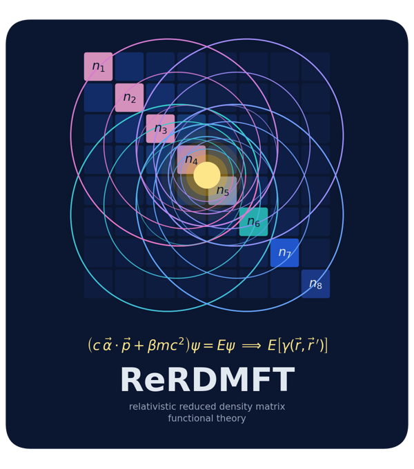

Projects /
MC2021/22 ReReDMFT
Relativistic reduced density matrix functional theory.
The Relativistic Reduced Density Matrix Functional Theory project aims to extend reduced density matrix functional theory (RDMFT) to compounds of heavy elements, accounting for relativistic effects at an affordable computational cost. It is funded by a Marie Skłodowska-Curie Action, grant 891647-ReReDMFT.

Outputs
- Relativistic reduced density matrix functional theory, SciPost Chem. (2022)
- Relativistic effects on electronic pair densities, J. Chem. Phys. (2022)
- Standalone NOFT module, Zenodo (2022)
- Time-reversal symmetry in RDMFT and pCCD with complex-valued orbitals, J. Chem. Phys. (2025)
Code

- ReRDMFT: relativistic RDMFT in C++17, with four-component Dirac-Hartree-Fock and X2C-HF. See also the software page.
Collaborators
- Prof. Dr. L. Visscher and Dr. K.J.H. Giesbertz, VU Amsterdam
- Dr. F. Bruneval
Outreach
The project included a talk for high-school students in Seville (January 2023).